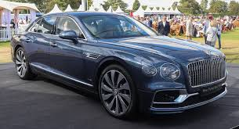
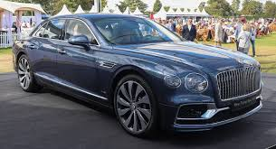

The new Flying Spur V8 has entered full production at Bentley’s Crewe headquarters, the world’s first carbon neutral factory for luxury car manufacture, with the car now formally certified and the first cars on their way to retailers and customers. Manufacture of the new Flying Spur is at 100% of capacity, thanks to Bentley’s proven COVID protocols that have prevented any cases of on-site transmission to date.
A team of craftspeople assemble each new Flying Spur V8 by hand, taking over 100 hours to do so across 84 individual stages. The new V8-powered Flying Spur builds on a distinguished lineage, with Bentley recently producing the 40,000th Flying Spur since 2005. The process of creating a new Flying Spur is meticulous in approach – for example, it takes 141 craftspeople using three kilometres of thread to combine 350 unique leather pieces to make the 60 components that form the interior.
The Flying Spur V8 offers a more driver-centric experience via increased agility and a more characterful engine note, whilst benefiting from increased range between fuel stops – now 441 miles / 709 km (WLPT) - and a 15% reduction in CO2 emissions vs its W12 sibling.
At the heart of the car is Bentley’s 4.0-litre, twin turbocharged V8 engine, producing a peak power of 550 PS (542 bhp, 404 kW) and using twin-scroll turbos to reach its maximum torque of 770 Nm at 2,000 rpm and maintaining it as flat plateau to 4,500 rpm.
 

At Bentley Motors there has been a philosophy of unrivalled craftsmanship ever since the company was founded in 1919 by W.O. Bentley. The Bentley Rotating Display, featured in the new Flying Spur as well as the Continental GT, is the modern, technically-focused interpretation of that philosophy. Bentley is revealing how the three-sided display, with over 150 parts and tolerances less than 0.5mm, was brought from concept to reality. Since launch the Bentley Rotating Display has been one of the most widely accepted options in the Bentley range, with approximately 70% of customer orders specifying the innovative system.
To deliver this feature a team of designers and engineers focused their attention to combine craftsmanship and cutting edge technology at the press of a button. The team created a unique centrepiece, providing customers the ability to choose between the main 12.3” infotainment touchscreen, a set of three analogue gauges (outside air temperature, a compass and a chronometer) or a book-matched piece of veneer, in a manner even James Bond – originally a Bentley driver - would be proud of. The Bentley Rotating Display (BRD) took more than three years to develop from initial concept, with extensive testing undertaken to ensure the highest quality standard was consistently achieved. The feature is constructed from 153 individual components to form a three sided rotating display with an innovative mechanism. The patent pending feature allows alignment of each face to a +/-0.3mm tolerance.
Bentley’s Interior Technical Manager, Dave Rook, who was responsible for the refinement and engineering of the BRD comments: “Not only will this feature be a talking piece in the future, but the veneer fascias will also appear timeless when customers and collectors proudly display their vehicle at Pebble Beach or Villa d’Este 50 years from now.”
For more infomation, click here
The new Flying Spur brings every element of Bentley’s extraordinary DNA together in perfect, seamless balance. Effortless performance, sculpted design and masterful technology combine to create a luxury grand tourer that is as graceful as it is commanding, as dynamic as it is poised.
In every astounding detail, across every carefully crafted surface, is an elegance and sophistication that elevates your journey and inspires further exploration. So whether you are the driver or the driven, step in. This is the definitive four-door grand tourer. And it was made for you.
The new Flying Spur’s confident form immediately commands attention. The gloss-black radiator matrix grille with new bright chrome vertical vanes contrasts the elegant curves. Sharp, uninterrupted design lines – created using the largest superformed panel in the automotive world – draw the eye over the car’s graceful yet muscular new profile. By positioning the front wheels further forwards the bonnet profile has been lifted to create finely balanced proportions. The result is an exterior with both a sophisticated and attractive look.